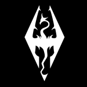
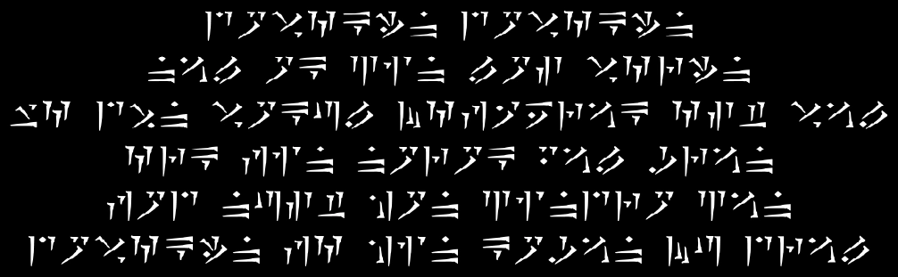
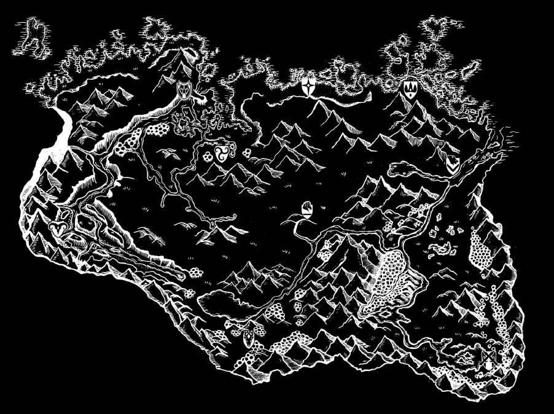
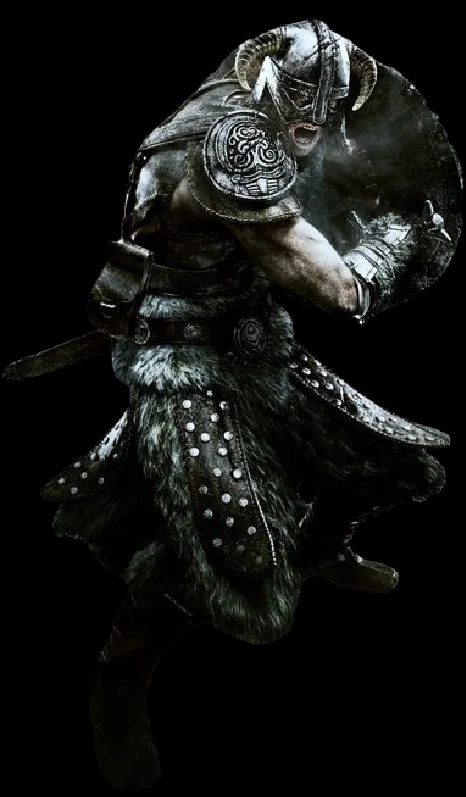
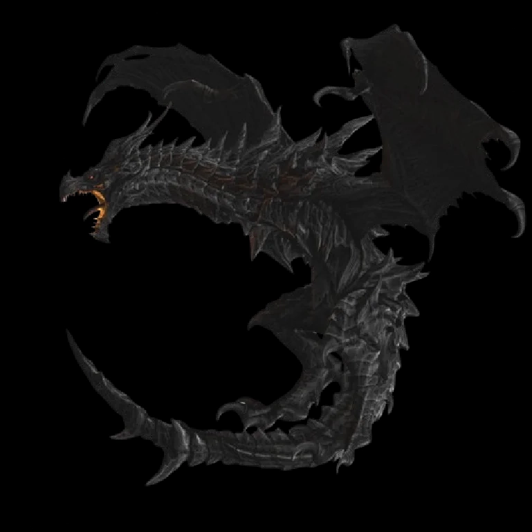
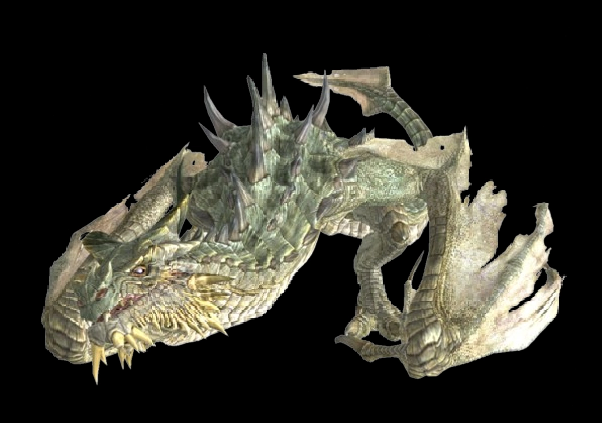
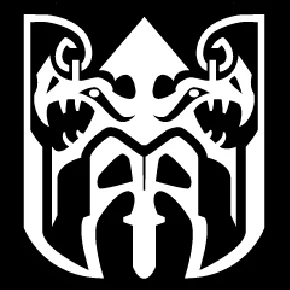
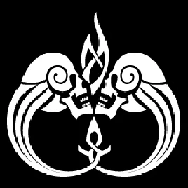
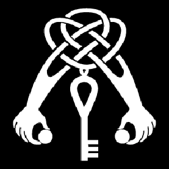
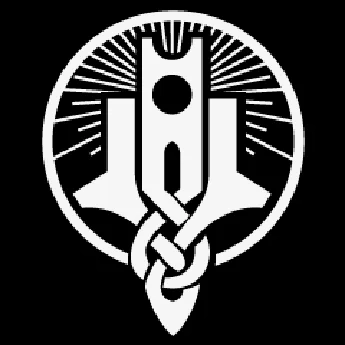

The Elder Scrolls V: Skyrim
Sobre Skyrim
The Elder Scrolls V: Skyrim es un videojuego de rol desarrollado por Bethesda Game Studios y publicado por Bethesda Softworks. Fue lanzado inicialmente en noviembre de 2011 para varias plataformas, incluyendo PC, PlayStation 3, y Xbox 360, y desde entonces ha sido adaptado para otras plataformas como PlayStation 4, Xbox One y Nintendo Switch.
La trama de Skyrim se desarrolla en la región ficticia de Skyrim, situada en el continente de Tamriel. El juego sigue al protagonista, conocido como el "Último Sangre de Dragón" o el "Dovahkiin", en su viaje para derrotar al dragón Alduin, el devorador de mundos, quien amenaza con destruir todo Tamriel.
Uno de los aspectos más destacados de Skyrim es su mundo abierto y vasto, que ofrece a los jugadores una gran libertad para explorar y tomar decisiones que afectan el curso de la historia. El juego presenta una variedad de razas jugables, habilidades, hechizos y armas, lo que permite a los jugadores personalizar su experiencia de juego según sus preferencias.
Además de la trama principal, Skyrim ofrece numerosas misiones secundarias, gremios, mazmorras, y secretos por descubrir. El sistema de combate incluye tanto combate cuerpo a cuerpo como a distancia, así como la posibilidad de usar magia.
El juego ha recibido elogios por su mundo detallado, su narrativa envolvente, su diseño de personajes y su sistema de progresión. Ha sido aclamado como uno de los mejores juegos de rol de mundo abierto de su época y ha ganado múltiples premios y reconocimientos de la industria.
Historia
La historia de The Elder Scrolls V: Skyrim se sitúa en la provincia de Skyrim, una región montañosa en el continente ficticio de Tamriel. El juego comienza con el personaje del jugador siendo llevado como prisionero a la ciudad de Helgen, donde está programada su ejecución. Sin embargo, durante la ceremonia, un dragón llamado Alduin aparece repentinamente, destruyendo la ciudad y causando caos. El jugador logra escapar gracias a la intervención de un personaje llamado Ralof o Hadvar, dependiendo de la elección del jugador al inicio del juego.
Después de escapar de Helgen, el jugador descubre que es el Dovahkiin, un ser con la capacidad de absorber almas de dragones y usar el Thu'um, el lenguaje de los dragones, para realizar poderosos gritos. La trama principal del juego se centra en la lucha contra Alduin, quien ha vuelto a Tamriel como parte de una profecía que predice el fin del mundo.
A lo largo del juego, el jugador se embarca en una serie de aventuras que incluyen unirse a diversas facciones como los Compañeros (guerreros), el Gremio de Ladrones, la Hermandad Oscura (asesinos), y la Universidad de Hibernalia (magos). Estas misiones secundarias ofrecen una amplia variedad de desafíos y recompensas, lo que permite al jugador explorar diferentes aspectos del mundo de Skyrim y desarrollar su personaje de acuerdo a su estilo de juego.
Además de la amenaza de Alduin, el jugador también se enfrenta a conflictos políticos entre el Imperio y los rebeldes de Skyrim, liderados por Ulfric Capa de Tormenta. Estos conflictos reflejan temas de libertad, independencia y lealtad en un mundo lleno de razas diversas como Nórdicos, Elfos, Orcos, Khajiit y Argonianos, cada uno con su propia cultura y conflicto interno.
A medida que el jugador avanza en la historia principal y en las múltiples misiones secundarias, descubre secretos antiguos, obtiene poderosas armas y hechizos, y se enfrenta a desafíos cada vez mayores hasta llegar al épico enfrentamiento final con Alduin, donde el destino de Skyrim y de Tamriel queda en manos del Dovahkiin.
Personajes
Dovahkiin
El protagonista de The Elder Scrolls V: Skyrim, conocido como el Dovahkiin, es un personaje especial dentro del mundo del juego. Se le describe como el "Último Sangre de Dragón", lo que significa que posee la habilidad única de absorber almas de dragones derrotados y utilizar el poder del Thu'um, el lenguaje de los dragones, para realizar gritos poderosos que pueden influir en la realidad misma.
El Dovahkiin es un personaje sin nombre y sin historia predeterminada, lo que permite al jugador crear su propia interpretación y trasfondo para el personaje. Puede ser de cualquier raza jugable en Skyrim, como Nórdico, Elfo, Orc, Argoniano, Khajiit, entre otros, lo que le da al jugador la libertad de personalizar la apariencia y las habilidades del protagonista según sus preferencias.
A lo largo del juego, el Dovahkiin se encuentra en medio de conflictos políticos, enfrentamientos con criaturas y seres místicos, y desafíos de todo tipo mientras busca cumplir su destino como el salvador de Skyrim y Tamriel. Su capacidad para dominar el arte del Thu'um y su habilidad para enfrentarse a peligrosos enemigos, incluidos dragones antiguos y seres daédricos, lo convierten en una figura legendaria dentro del universo de Skyrim.
El viaje del Dovahkiin está marcado por su crecimiento personal y su influencia en el mundo que lo rodea. Desde sus humildes comienzos como un prisionero condenado en Helgen hasta convertirse en el héroe legendario que desafía a los dioses y a las fuerzas oscuras que amenazan con destruir el orden establecido, el Dovahkiin representa la encarnación del poder y la libertad que los jugadores experimentan en este vasto y épico juego de rol.
Alduin
Alduin, también conocido como "El Devorador de Mundos" en la mitología nórdica dentro del universo de The Elder Scrolls V: Skyrim, es uno de los antagonistas más icónicos del juego. Se le presenta como un dragón antiguo y poderoso, que en el pasado fue derrotado y enviado a través del tiempo por los dioses para evitar su dominio sobre el mundo.
Su retorno es el evento central que desencadena la trama principal del juego. Alduin reaparece en Skyrim como parte de una profecía que predice el fin del mundo, conocida como el "Regreso de Alduin". Su presencia amenaza con destruir la estabilidad de Tamriel y sumergir el mundo en caos y oscuridad.
Lo que distingue a Alduin de otros dragones en Skyrim es su capacidad para resucitar a otros dragones caídos, lo que lo convierte en una amenaza aún mayor para el protagonista y para el mundo en general. Además, su dominio sobre el Thu'um es excepcional, lo que lo hace formidable en combate y difícil de derrotar.
Alduin no es simplemente un enemigo físico, sino también un símbolo de la destrucción y la corrupción. Representa la idea de la fatalidad y el ciclo interminable de la vida y la muerte en el mundo de Skyrim. Su derrota no solo implica vencer a un poderoso enemigo, sino también restaurar el equilibrio y la esperanza en un mundo amenazado por la oscuridad.
El enfrentamiento final con Alduin es uno de los momentos más épicos del juego, donde el Dovahkiin, el protagonista, debe utilizar todas sus habilidades y recursos para enfrentarse al Devorador de Mundos y evitar el desastre total. La batalla no solo es una prueba de fuerza, sino también un símbolo de la lucha entre el bien y el mal en el vasto y mítico mundo de Skyrim.
Parthurnax
Parthurnax es un personaje fascinante dentro del universo de The Elder Scrolls V: Skyrim. Como uno de los dragones más antiguos y sabios, Parthurnax despierta un interés especial debido a su historia y su papel en la trama del juego.
A diferencia de la mayoría de los dragones en Skyrim, Parthurnax ha renunciado a su naturaleza malévola y ha adoptado una filosofía de paz y sabiduría. Después de la derrota de Alduin en el pasado, Parthurnax se retiró a lo alto de la montaña llamada La Garganta del Mundo, donde medita y busca redimirse por sus acciones pasadas como siervo de Alduin.
El encuentro con Parthurnax es un momento crucial para el protagonista, el Dovahkiin, ya que este dragón anciano posee un conocimiento profundo sobre la naturaleza de Alduin, la profecía del "Regreso de Alduin" y cómo derrotar al Devorador de Mundos. Parthurnax guía al Dovahkiin en su entrenamiento para dominar el Thu'um y se convierte en un mentor invaluable en la lucha contra las fuerzas oscuras que amenazan Skyrim.
La relación entre el Dovahkiin y Parthurnax plantea cuestiones éticas y morales intrigantes. Aunque Parthurnax busca redimirse y ayudar a derrotar a su hermano, Alduin, su pasado como siervo de la destrucción no se olvida fácilmente. Esta dualidad entre redención y culpa agrega profundidad al personaje de Parthurnax y a las decisiones que el jugador debe tomar en el transcurso de la historia.
En resumen, Parthurnax es mucho más que un simple dragón en Skyrim; es un símbolo de sabiduría, redención y la complejidad moral que caracteriza al mundo de The Elder Scrolls. Su presencia en la historia no solo enriquece el trasfondo del juego, sino que también plantea preguntas profundas sobre el bien y el mal, el perdón y la responsabilidad personal.
Facciones
En The Elder Scrolls V: Skyrim, los jugadores tienen la oportunidad de unirse a diversas facciones que representan diferentes aspectos del mundo de Tamriel y ofrecen experiencias únicas de juego. Desde los valientes guerreros de Los Compañeros hasta los sigilosos ladrones del Gremio de Ladrones, pasando por los misteriosos magos de la Universidad de Hibernalia y los cazadores de vampiros de la Guardia del Alba, cada facción tiene su propia historia, desafíos y recompensas. Al unirse a una facción, los jugadores pueden sumergirse en emocionantes misiones, desbloquear habilidades especiales y descubrir secretos que revelan más sobre el rico y diverso mundo de Skyrim.
Los Compañeros
También conocidos como los Hijos de Ysgramor, los Compañeros son un gremio de guerreros nórdicos que se dedican a la gloria en el combate y la búsqueda de aventuras. Están basados en Jorrvaskr, en la ciudad de Whiterun, y aceptan miembros de todas las razas. Los Compañeros valoran la fuerza, el honor y la camaradería, y ofrecen misiones relacionadas con el combate, la caza de bestias y la exploración de tumbas antiguas.
La Hermandad Oscura
Una organización de asesinos y sicarios que operan en las sombras, la Hermandad Oscura es conocida por su lema "La Muerte es la única salida". Tienen su santuario en Falkreath y realizan contratos de asesinato para aquellos que buscan eliminar a sus enemigos de manera discreta. Los miembros de la Hermandad Oscura deben seguir estrictos códigos y rituales, y sus misiones suelen involucrar infiltrarse en lugares peligrosos y eliminar objetivos específicos sin ser detectados.
El Gremio de Ladrones
Conocidos también como los Sinvergüenzas de Riften, el Gremio de Ladrones se dedica a robar tesoros y artefactos valiosos en toda Skyrim. Tienen su base en el Refugio Cisterna en Riften y aceptan miembros que demuestren habilidades en el sigilo, el robo y la persuasión. Las misiones del Gremio de Ladrones implican robar objetos preciosos, sabotear competidores y desafiar a otras facciones rivales dentro del mundo del crimen.
La Universidad de Hibernalia
Una institución de magia y conocimiento, la Universidad de Hibernalia se encuentra en el Collegio de Hibernalia en la ciudad de Hibernalia. Está compuesta por magos y hechiceros que estudian las artes arcanas y buscan ampliar su comprensión de la magia. Las misiones de la Universidad de Hibernalia suelen involucrar la recuperación de artefactos mágicos, la investigación de antiguos secretos y la defensa contra amenazas mágicas en Skyrim.
